GCSE Genie · How it works
School, cadets, drums, DofE, nine subjects, homework. Genie holds the plan so you don't have to carry it in your head — and shows you, honestly, whether it all fits.
▶ Watch the film first · 3 minThe whole thing on one page
Genie only really does two things. It checks your goals are getting the hours you promised them, and it checks your week isn't overfull. Everything else on this page feeds one of those two.
Do these in order
About twenty minutes, once. Some steps are yours, some are Mum's, and two are best done sitting down together. Each one links to the section that explains it properly.
Tap This device only in the header and sign in. Use the same email on every device — phone, laptop, tablet. A different address gets you a different, empty Genie, and that is the single most common thing to get wrong.
Switch to Parent Mode and choose it before Tejas starts using the app. Whoever sets it first controls the portal. More on the portal →
Check the Odd/Even week lessons are right and fix anything that's changed. How the timetable works →
Cadets, drums, DofE and art support are already in there with their hours. Correct them so the capacity number is honest. Fixed commitments →
They arrive as drafts on purpose. You write the wording and say what the hours cost; Mum locks the ones you both agree. Until a goal is locked it counts towards nothing. How goals work →
Homework, a test date, a missing lesson — there are three different ways in, and the fastest is the + button. Three ways to add things →
Pull work into This week on the Plan tab. Anything you don't stops nagging you. Then send the week for approval, so it stops being a wish and becomes a promise. Prioritising →
Four taps. This is the one habit the whole app rests on — nothing else moves without it. The streak →
So the day's updates have somewhere to go once they're signed off. Signing off →
The centre of everything
A goal isn't a wish. In Genie a goal is a promise with a price in hours per week — and that price is the honest bit, because it's what gets counted against your week and checked every Wednesday.
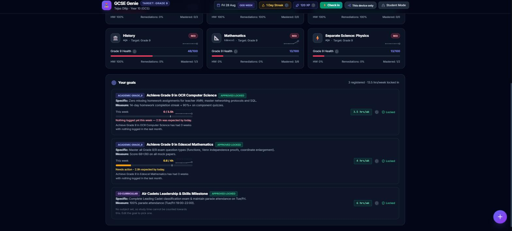
| Stage | What it means | Does it count? |
|---|---|---|
| Draft | Yours. Write it, change it, delete it. Nobody's looking yet. | No |
| Sent for approval | You've offered it. Mum reads the wording and the hours. | No |
| Locked | You both agreed. Now it reserves its hours and gets checked. | Yes |
This is the bit worth understanding properly, because it's how the pace bar actually moves. There are two ways time lands on a goal:
When you check in, you say which subject the minutes were for. Time on Maths counts towards any locked Maths goal automatically.
A task can be linked to a specific goal when you add it, under More options. Time booked to that goal counts to it directly.
If a goal has no subject set, nothing can attach to it — Genie says so on the goal rather than pretending it's on track.
Doing the work isn't enough — the check-in is what tells Genie you did it. A goal can sit there looking untouched after a week where you worked hard, purely because the minutes were never logged against a subject. Thirty seconds a night fixes it.
The shape of your week
Before a single piece of homework, your week is already mostly spoken for. Genie needs to know that, or the "you've got loads of time" maths is a lie. Two things describe it.
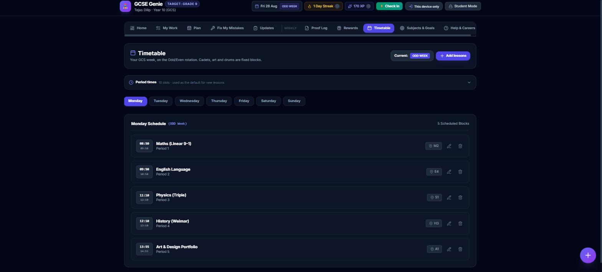
There's a quiet payoff to keeping this right: when you add homework, Genie guesses the subject from the lesson you just had. One less thing to tap.
Air Cadets, drums, Bronze DofE and art support aren't homework — they're hours that are gone whether you plan for them or not. They're set up once with their weekly hours, and they count against your week from then on.
But real weeks aren't tidy. When an evening doesn't happen — a family dinner, a mock, the unit standing down — tap Not happening next to it:
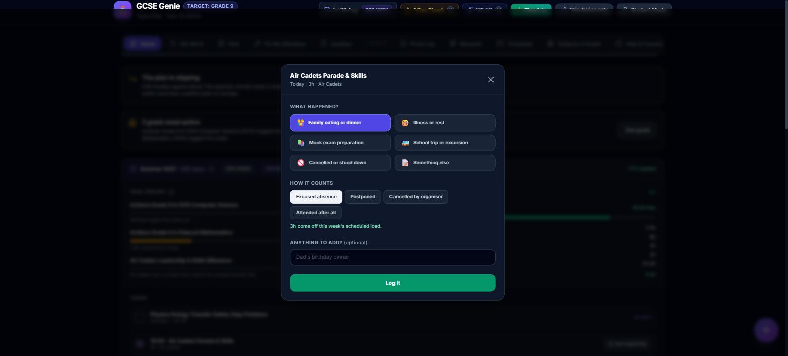
Getting things in
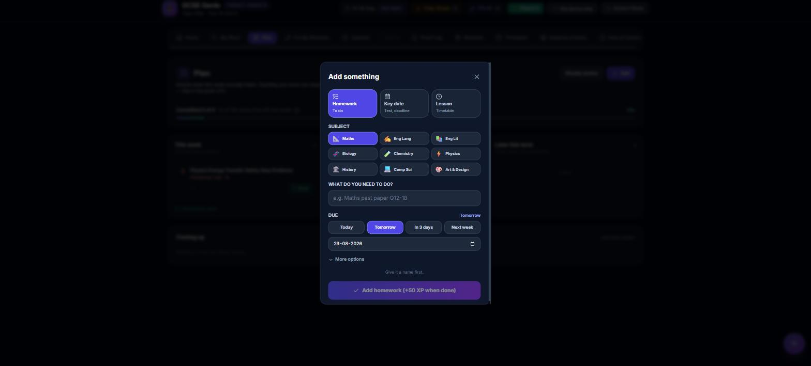
Fastest, from anywhere. Two taps if you accept the date and subject it guessed.
Write "ask Mr Davies about Q14" in tonight's check-in and Genie turns it into a real task for tomorrow.
Log a test in the Proof Log and the questions you dropped marks on become fix-up tasks by themselves.
Deciding what actually happens
A single long list makes everything feel equally urgent and equally late, which is exactly the pressure that makes people stop opening the app. So work sits in one of four columns, borrowed from how sprints actually work.
The middle used to be one column called Next up, and it was doing two jobs: "I'm doing this next week" and "this is somewhere in the next month" are completely different promises, and the week you're about to plan is the only one you can realistically pull from. So it split.
| Column | What it means |
|---|---|
| This week | A promise. Counts towards your load, goes into the week you get approved, and Genie will nudge you about it. |
| Next week | The next sprint. Scheduled, not yet promised — this is the shelf you pull from on Sunday. |
| Future | Dated, further out. Known about, counts towards nothing. |
| Backlog | Someday, no guilt. Completely silent until you move it. |
Moving a task out of This week — one tap on the arrow — is a normal thing to do, and Genie treats it that way: it just asks, optionally, why. "Ran out of time", "mock prep took priority". That one sentence is what turns "you only did 3 of 6" on Sunday into a conversation instead of an argument.
Tests and deadlines live on this tab too, and the revision you plan for one is nested underneath it — with its column and its hours, editable and removable. Planning a mock used to spawn a separate task that wandered off into This week while the date sat in Coming up: the same thing twice, in two lists, under two names, with neither admitting the other existed. Add work also stays available afterwards, because one piece of revision is rarely the whole answer.
A term of homework can be done conscientiously and still move no goal at all. So the planner reports how many committed hours have no goal behind them — hours, not tasks, because one unattached four-hour job matters more than three fifteen-minute ones — and offers the link right where the gap shows.
Study time is whatever is left after everything else, and "everything else" is more than the recurring commitments. The week's other activities go in as counts rather than rows — 4 days of school, 2 parade nights, 1 birthday party, a film — because that is how a week gets described out loud. Five categories, because "busy" is not one thing: Academic, Extra-curricular, Career-focussed, Recreational, Fun. A careers evening and a birthday party both cost three hours and are not the same call, and a week with no Fun in it is a finding rather than a triumph.
From midweek the check-in asks how many of each actually happened — one tap per count — and hands the hours back when the answer is fewer. It doesn't ask on Monday, when nothing has happened yet.
Turning a plan into a promise
Over-promising is invisible from inside your own week. Every single task looks reasonable on its own; it's only the fortnight of them together that doesn't fit, and by then you're already behind. So a week goes through three states.
| State | What it means |
|---|---|
| Draft | Yours to move around. Nothing is fixed and nothing is being measured against it. |
| Awaiting approval | You've sent it. A parent reads it in the Portal, behind the passphrase. |
| Baselined | Agreed. This is what "did the week go to plan?" gets measured against on Sunday. |
A readiness checklist says exactly what's outstanding, phrased as the thing to do rather than the thing that's wrong. Four of them block; two only warn.
| Check | |
|---|---|
| Commit at least one piece of work | Blocks |
| Give every committed task an hours estimate | Blocks |
| Clear or move anything already overdue | Blocks |
| Plan work for key dates in the next 14 days | Blocks |
| Link committed work to the goal it serves | Warns |
| Check the load fits the time available | Warns |
A mock fortnight legitimately blows the ceiling, and refusing to let anyone plan such a week just pushes the planning outside the app — onto paper, where nobody can see it. So the overload is stated, a reason is asked for, and a parent decides. Same with work that serves no goal: sometimes homework is just homework.
It will. So pulling work into an approved week offers the swap first: pick what comes out, see the trade in hours, and the change is recorded along with what it displaced. Adding on top is still allowed, with a reason — because school doesn't check your plan before setting work, and refusing outright would just send that work somewhere Genie can't see it.
What this buys is a truthful answer on Sunday: was the plan wrong, or was it abandoned? Those two have completely different fixes, and without the baseline they look identical.
One letter, on Home
Every part of the answer already existed and none of it was ever added up. Goal pace lived on one screen, the commitment count on another, whether the week had even been agreed on a third. Each was honest alone, and none of them answered the question a parent actually asks on a Wednesday evening.
So: red, amber or green, with a percentage, from six weighted signals — effort against your goals, how many goals are at risk, the work promised this week, whether the week was ever agreed, whether the goals are finalised, and the workload.
The six signals are always shown underneath it. A score nobody can take apart is a score nobody believes — and an unbelieved score still gets argued about.
Nothing is judged against a full week's target on Tuesday morning. Two days in, it asks for two days' worth.
No approved goals is one problem, not three. The signals that depend on goals drop out of the average rather than each scoring zero.
A single red keeps the week off green however well everything else is going, and two reds make it red whatever the arithmetic says. Averaging one genuine failure away is exactly how a dashboard ends up reassuring people about the one thing that is actually wrong.
Two different questions that look the same from the inside. The burn-down says what rate a goal now needs to finish on time; the capacity gauge says what the week can actually hold. Separately neither is actionable. Together they tell you which of the two you've got — and the remedies are opposite. Behind is fixed by more hours. Impossible is fixed by fewer goals, a later target, or a lighter week. Telling someone to try harder at something that does not fit is how a plan stops being believed.
Actually doing it
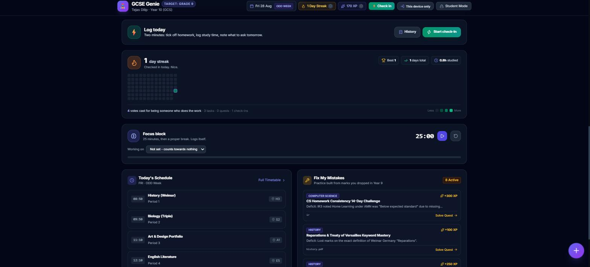
The break isn't a reward, it's part of the method. Genie also keeps an eye on the ratio: if breaks start eating the sessions, it says so quietly rather than letting an hour of "revision" turn into ten minutes of work.
The most valuable tab in the app
This is the difference between revising and actually getting better. Every mark you dropped in a Year 9 paper is sitting here as a specific thing to fix — not "revise Maths", but "scored 0/2 on proving event independence on the Venn diagram question".
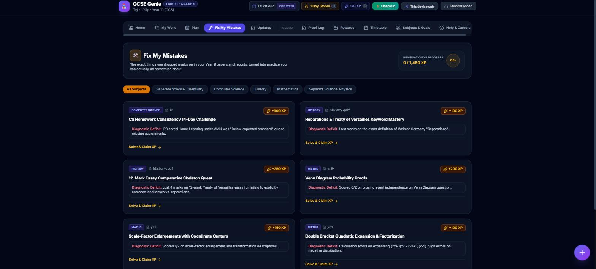
When a paper comes back, log it in the Proof Log: the score per question, what kind of mistake each one was, and a photo of the paper. Genie turns the wrong ones into new fix-ups automatically. That's the loop — mistake, practice, proof.
Why bother every day
Checking in takes four taps: energy, tick what you did, drag the minutes, save. Do it and the streak grows. Miss one day and nothing happens — one missed day is always forgiven. Only two in a row resets it.
That rule is deliberate. Losing a three-week run over one bad Saturday punishes you hardest exactly when coming back matters most.
Check-ins, homework, fix-ups and chores all pay XP. Bins and the dishwasher count — small amounts, on purpose, so chores can't out-earn revision.
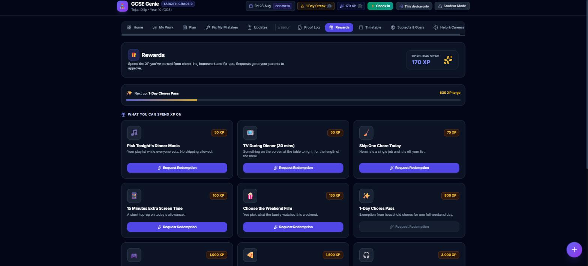
The one screen to check
This is the question the whole app exists to answer, and it lives at the top of Home. You shouldn't have to add anything up.
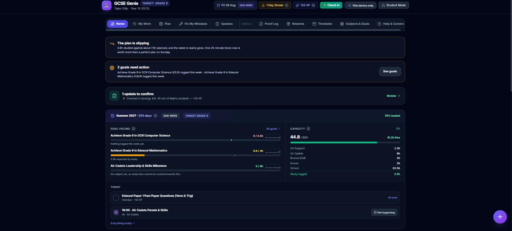
If a goal has been amber or rose for a while, the honest move isn't to feel bad about it — it's to change something. You have three real options, and all of them are fine:
Put a specific task in This week and link it to that goal. Vague intentions don't move bars; a named task on a named day does.
If 4 hrs/week was never realistic, edit the goal and say so. A parent re-locks it. An honest 2 beats a fictional 4.
Finished, or overtaken by events? Mark it done. Genie will show the hours freeing up — then write the goal that replaces it.
Closing a goal releases its hours back into your week, which is exactly when it's worth asking: what's the next thing those hours should buy? The best time to write the next goal is the moment you finish the last one, while you still remember what worked.
You don't have to sort it alone
Some of this app is deliberately two-player. Goals are written by you and locked by a parent. Rewards are requested by you and approved by them. The Sunday review is fifteen minutes with both of you in front of one screen.
And when you're stuck, there are three ways to say so without having to start the conversation cold:
Write what you're stuck on. Genie offers to send it home as a proper message, with the subject and the question already in it.
Any draft goal can be sent for approval with its hours and its measure — so the conversation starts from something written down.
If your energy's been low for a few days, Genie notices and offers to make the week smaller — and to say so for you.
Nothing is ever sent behind your back. Every message is one you can read first, and it only goes when you tap. The app never sends anything on its own.
End of the day · one minute
"Did you do your homework?" is only a question while the answer lives on one phone. Genie's answer is the Updates tab.
Everything you change gets a quick confirmation first — it names the thing and what it'll do
(+50 XP), so a stray tap on a scrolling list can't quietly change your numbers:
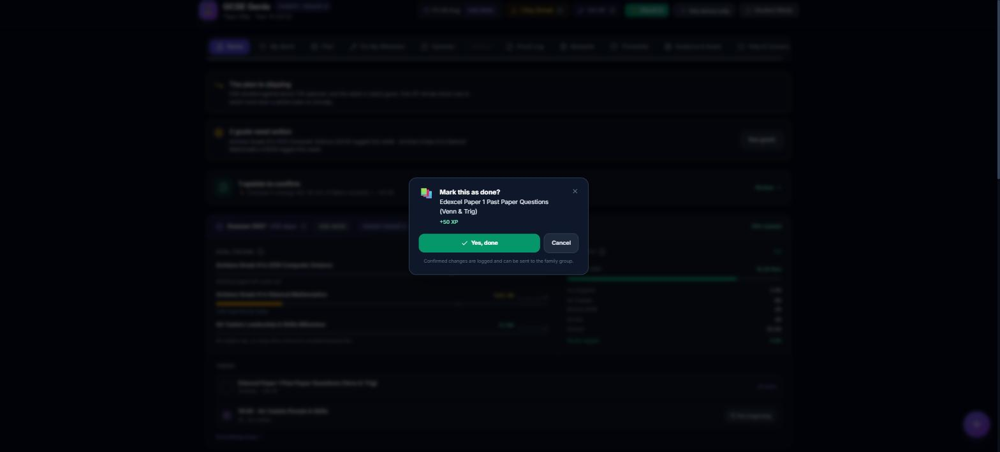
Then, at the end of the day, all of it in one place:
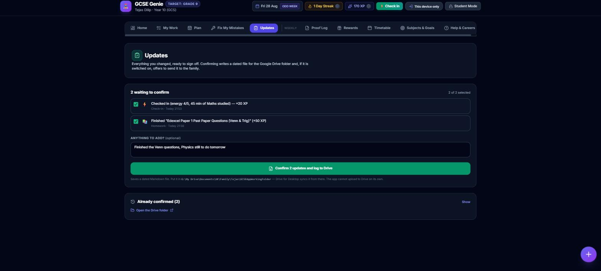
Confirming does three things at once:
Each entry keeps the time it happened and the time you signed it off.
Genie-Updates-2026-09-02-1830.md — drop it in the Drive folder and it syncs.
The family group, or Mum and Dad directly. Nothing goes until you tap.
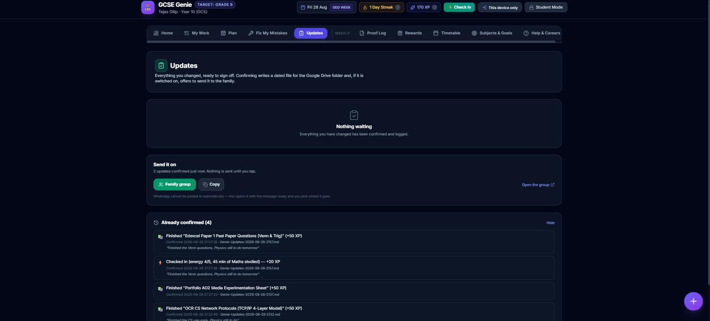
Genie can't post to WhatsApp by itself. No app can drop a message straight into a group. It writes the message, opens WhatsApp with it ready, and you pick where it goes — which is why the button says Open in WhatsApp, never Send.
And it saves the Drive file rather than uploading it. Put it in the GCSE working folder and Drive for Desktop does the rest.
For parents
The Parent Portal sits behind a passphrase and holds the things that shouldn't be casually changed. The working principle is simple: Tejas records what happened; you decide what the week is allowed to contain.
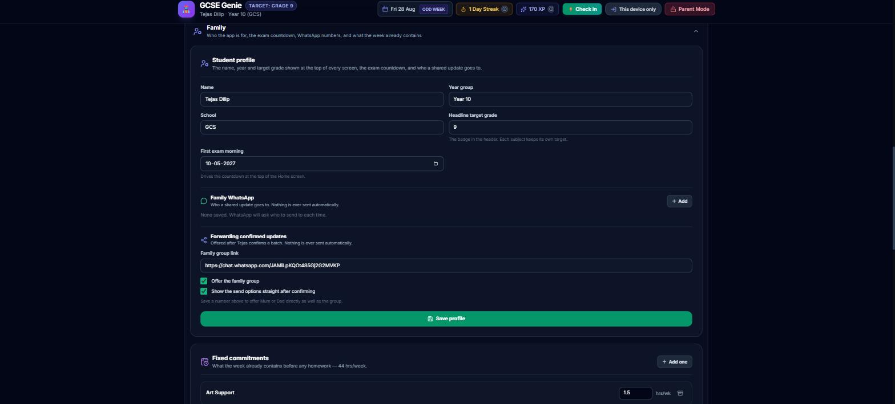
| When | What |
|---|---|
| Whenever it arrives | An update log lands in the family group. Read it, or don't — the point is you didn't have to ask. |
| When something's requested | Approve or decline a reward. Lock a goal you've both agreed. Baseline the week he's sent you. All take seconds. |
| Sunday, 15 minutes | The weekly review, together: last week, next week, anything waiting on you, then sign off. |
| Now and then | Run the change-history integrity check, and take a backup. |
| Setting | What it changes |
|---|---|
| Locking a goal | Until you lock it, a goal's hours count towards nothing. Locking is what makes it real — and it's the moment to push back on hours that aren't realistic. |
| Approving the week | A week sent for approval is read here and baselined — or sent back with a note. Until it is, "did the week go to plan?" has nothing to measure against. |
| Fixed commitments | What the week already contains. Dropping an activity here immediately frees the capacity it was using. |
| Chores & rewards | What earns XP, and what XP is worth. Keep chore XP small so it can't out-earn revision. |
| WhatsApp & forwarding | Where confirmed updates may go — the group, you directly, or nowhere. All optional. |
| Exam date | Drives the countdown on every screen. |
| Sanctions | Log a detention; it can freeze the reward shop until a fix-up quest is done. |
| Change history | Every change, hash-chained. If a row is edited outside the app, the integrity check finds it. |
Reset clears activity, never your setup. It empties check-ins, XP, streaks, reward requests, logged absences and the update log — and leaves your WhatsApp numbers, the family group, the exam date, the chore list, the fixed commitments, the reward catalogue and your passphrase exactly as they were. The preview lists what survives before you commit.
Close Genie in any other tab and reload. The app updates its local database when it changes, and a browser won't do that while an old tab still holds it open. Genie now shows a banner when that's happening rather than sitting there quietly.